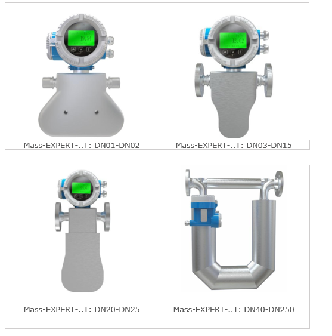

Типовые промышленные условия — универсальное решение для большинства технологических процессов. Расходомеры в стандартном исполнении T обеспечивают надёжную и точную работу в диапазоне рабочих температур от −50 °C до +150 °C при давлении до 10 МПа.
← К списку модификаций
Исполнение T — базовая модификация кориолисовых расходомеров Mass-EXPERT, предназначенная для типовых промышленных условий эксплуатации. Это универсальное решение, охватывающее подавляющее большинство стандартных технологических процессов.
Стандартное исполнение T объединяет все базовые преимущества кориолисовой технологии Mass-EXPERT в корпусе, оптимизированном для типовых промышленных условий.
Рабочая среда от −50 °C до +150 °C охватывает большинство технологических процессов в нефтегазовой, химической, пищевой и других отраслях промышленности. Не требует специальных термоизоляционных мероприятий.
Стандартное исполнение рассчитано на давление до 10 МПа, что соответствует подавляющему большинству промышленных трубопроводов. Для более высоких давлений предусмотрены модификации P и PK.
Исполнение T доступно во всех типоразмерах — от микрорасходомеров DN01 до промышленных DN250. Это позволяет подобрать оптимальный расходомер для любой задачи без смены модификации.
Измерение массового расхода не зависит от вязкости, плотности и электропроводности рабочей среды. Обеспечивается стабильная точность для жидкостей, газов, суспензий и многофазных сред.
Компактная моноблочная конструкция объединяет сенсор и трансмиттер в едином корпусе. Это упрощает монтаж, снижает стоимость установки и исключает дополнительные кабельные соединения.
Кориолисовый принцип измерения не требует наличия прямых участков трубопровода до и после расходомера. Это позволяет устанавливать прибор в условиях ограниченного пространства.
Стандартное исполнение T — базовая комплектация, рекомендуемая для подавляющего большинства промышленных применений, не требующих экстремальных температур или давлений.
| Параметры исполнения T (Стандартное) | |
|---|---|
| Код исполнения | T |
| Условный диаметр (DN) | от 1 до 250 |
| Диапазон температур рабочей среды | от −50 до +150 °C |
| Максимальное рабочее давление | до 10 МПа |
| Принцип измерения | Кориолисовый эффект |
| Зависимость от вязкости среды | Нет |
| Зависимость от плотности среды | Нет |
| Зависимость от электропроводности | Нет |
| Требование к прямым участкам | Не требуется |
| Конструкция | Интегрированная (сенсор + трансмиттер) |
| Рекомендуемая область применения | Типовые промышленные условия без экстремальных температур / давлений |
| Типы измерительных трубок | U, K, W, L, Δ (все типы) |
| Трансмиттеры | ME100, ME200, ME300 |
| Выходные сигналы | 4–20 мА (HART), RS-485 (Modbus RTU), Profibus PA, CAN, импульсный, частотный, дискретный |
| Взрывозащита | Ex d ib IIC T6 Gb; Ex db ia IIC T6 Gb; Ex tb ia IIIC T80°C Db |
| Степень защиты корпуса | IP66, IP67 |
Стандартное исполнение T рекомендуется для большинства промышленных задач, где температура среды не превышает +150 °C, а давление — 10 МПа.
Исполнение T — базовая модификация, оптимальная для стандартных условий. Если ваши технологические параметры выходят за рамки −50…+150 °C или 10 МПа, рассмотрите специализированные исполнения.
| Условия | Рекомендуемое исполнение |
|---|---|
| −50…+150 °C, до 10 МПа | T — Стандартное ✅ |
| Высокое давление (выше 10 МПа) | P — Повышенное давление |
| Сверхвысокое давление (до 96 МПа, водород) | PK — Сверхвысокое давление |
| Криогенные среды (до −200 °C) | L — Криогенное исполнение |
| Высокая температура (до +230 °C) | G — Высокая температура |
| Сверхвысокая температура (до +350 °C) | C — Сверхвысокая температура |